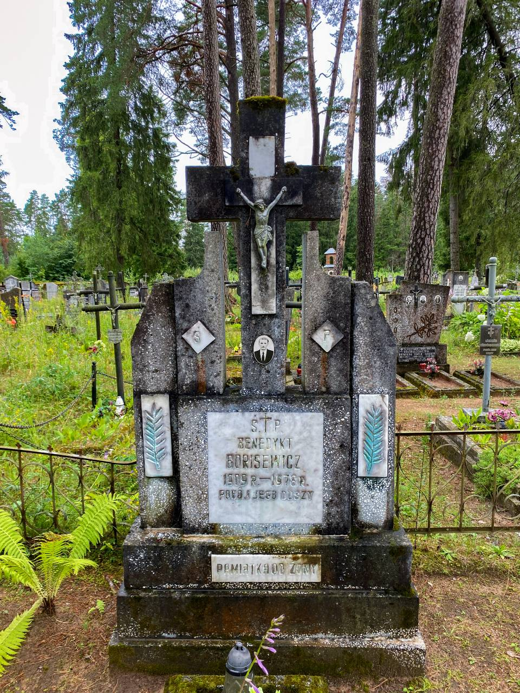
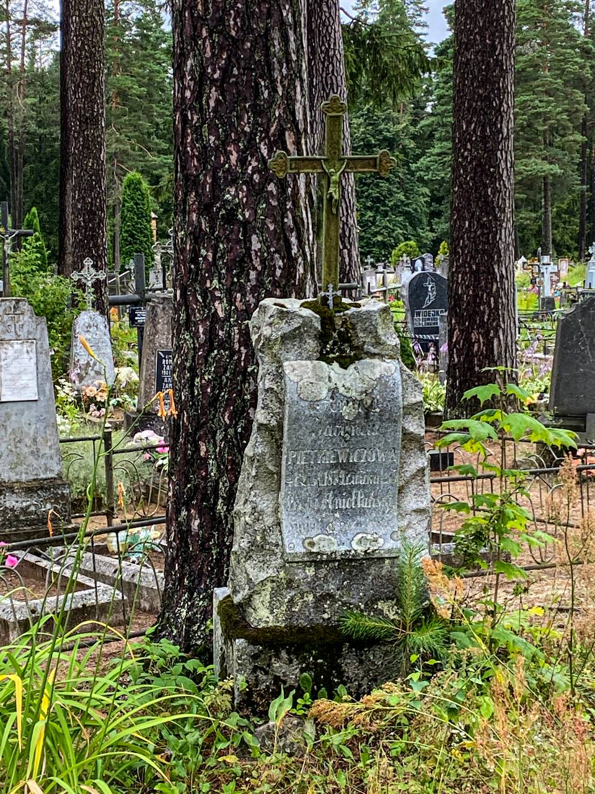
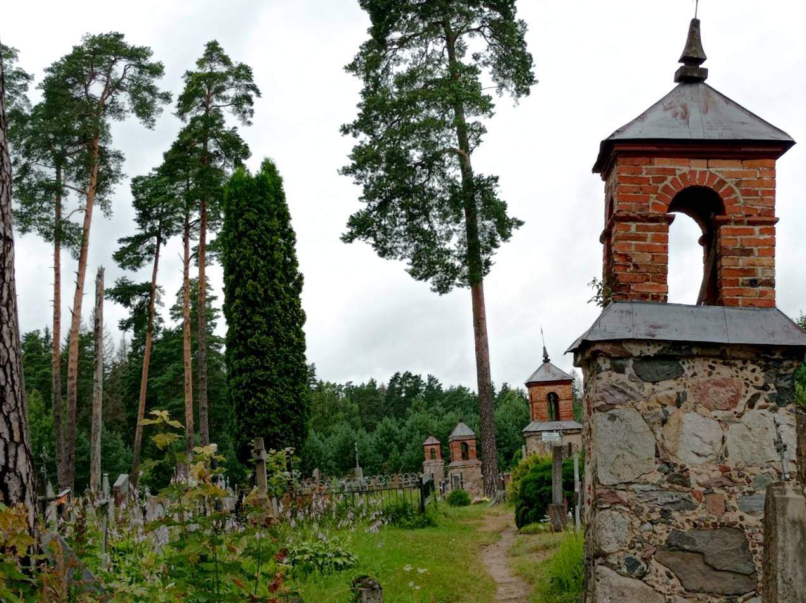
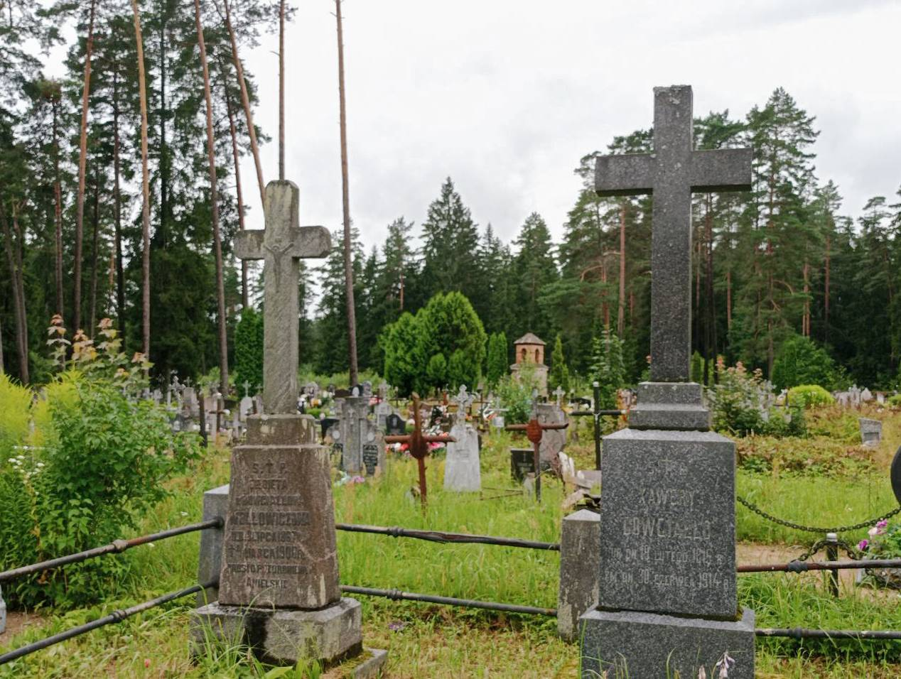
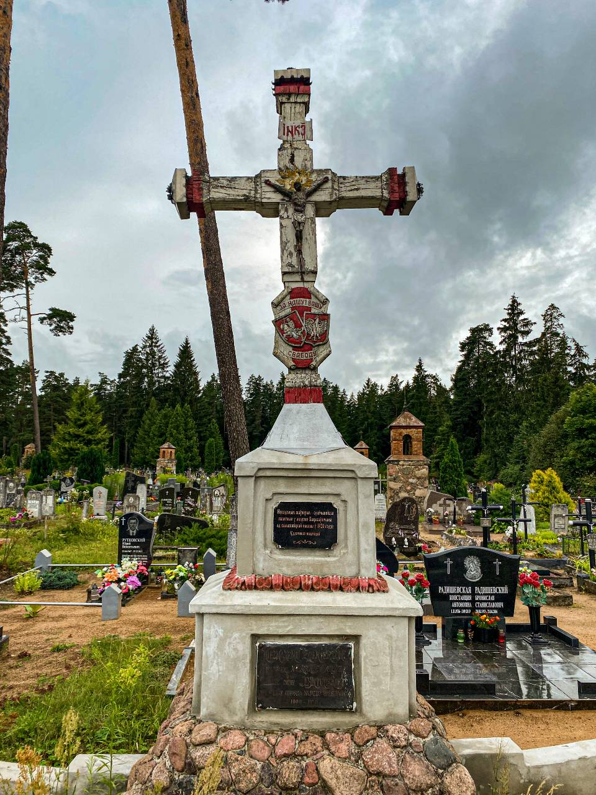
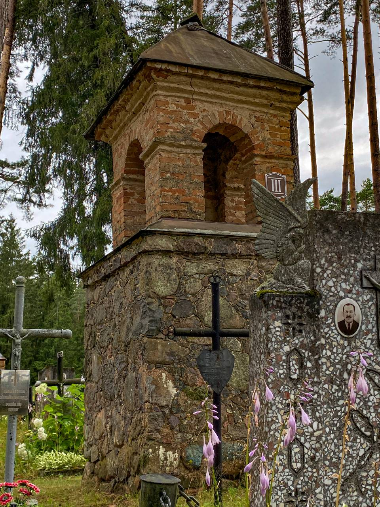

На ўскрайку Лынтупаў размешчаны могілкі, звязаныя з рознымі знакамітымі людзьмі гэтай мясцовасці з 1700-х гадоў. Там і патаемныя хады, магілы з польскай, рускай, беларускай, літоўскай мовай на надмагіллях.

Тут жа пахаваны і мясцовы памешчык Ксаверый Даўгяла, які сябраваў з Прасперам Мерыме, французскім пісьменнікам. Ксаверый расказаў яму мясцовую легенду пра Локіса, якая легла ў аснову аднайменнай навэлы.
Сын Ксаверыя - Уладзіслаў Даўгяла, пачаў першыя археалагічныя раскопкі лынтупскіх курганоў. Пражыў Уладзіслаў нядоўга, і ў памяць аб сваім мужы, яго жонка падарыла лынтупскім могілкам 13 капліц, пабудова якіх была з 1911-1914гг. Гэта жанчына была вельмі добрым чалавекам - выратавала вельмі шмат людзей ад растрэлу падчас Другой Сусветнай Вайны.

Тут жа можна ўбачыць унікальную магілу і помнік Невядомаму салдату арміі Рэспублікі Сярэдняй Літвы, якая была абвешчана ў гэтых мясцінах і Вільні ў 20-х гадах мінулага стагоддзя. Рэспубліка праіснавала каля года, але за гэты час на гэтых землях было адчынена больш за 100 беларускіх школ. Краязнаўца Алесь, які збірае інфармацыю больш за 30 гадоў, расказвае, што ў дзяцінстве, проста на гэтым месцы, сярод высокай травы, знайшоў разваліны старога помніка, на якім надпіс быў прыкрыты фанерай. Цікаўны Алесь паглядзеў гэты надпіс на польскай мове. Там было сказана наступнае: “Невядомаму салдату, які загінуў у абароне Айчыны. Ад гараджан Лынтупаў”.
У той час гэта была таямніца, нікому нельга было казаць пра гэты помнік, бо камуністы маглі з лёгкасцю знішчыць спадчыну гэтых земляў. Усе жыхары вёскі ведалі пра гэты помнік, але ніхто не казаў пра гэта адкрыта. Пасля развалу СССР помнік быў адрэстаўраваны беларускім мастаком Алесем Цыркуновым. Запісала Ганна Адоцік